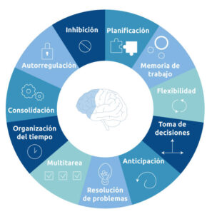
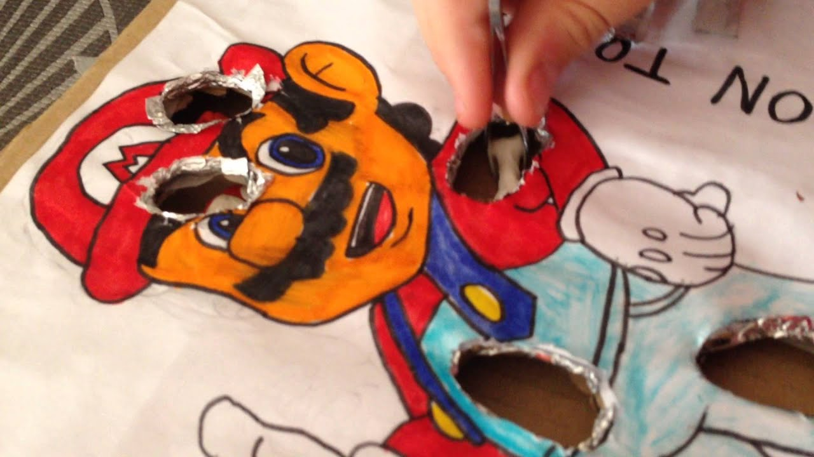

Título del proyecto 🔍
PROBLEMA O NECESIDAD EDUCATIVA
PROBLEMA O NECESIDAD EDUCATIVA
Además, en este nivel educativo aún existe una escasa integración de enfoques STEAM, lo que limita el desarrollo temprano del pensamiento lógico, la exploración tecnológica y la motivación por el aprendizaje activo. Muchas actividades continúan basándose en metodologías tradicionales que no siempre promueven experiencias significativas centradas en la manipulación y la experimentación. Según Bers (2020), la integración de enfoques STEAM y robótica educativa en la primera infancia favorece el aprendizaje activo y significativo, al permitir que los niños aprendan mediante la exploración, la experimentación y la resolución de problemas; en consecuencia, la falta de estas metodologías reduce la motivación y las oportunidades de interacción temprana con la tecnología.
Estas dificultades se ven acentuadas cuando las estrategias pedagógicas se basan predominantemente en metodologías tradicionales, con escasas oportunidades para la manipulación, el movimiento y la experimentación activa. En este sentido, resulta necesario implementar propuestas educativas innovadoras que integren el juego, la exploración y el uso de recursos tecnológicos, permitiendo a los niños aprender de manera significativa mientras desarrollan sus habilidades motoras y cognitivas de forma integral.
En el nivel de Educación Inicial (3 a 6 años) se ha evidenciado que muchos niños presentan dificultades en el desarrollo de la motricidad fina y gruesa, manifestadas en problemas para manipular objetos pequeños, mantener el equilibrio. Estas dificultades se observan con frecuencia durante actividades escolares que requieren coordinación ojo-mano, como el ensartado de piezas, el armado de materiales, el dibujo, así como en juegos que implican desplazamiento y control corporal.
El uso de la robótica educativa se considera una de las actualizaciones tecnológicas más avanzadas para el desarrollo de habilidades y capacidades para el estudiante, la robótica educativa se contextualiza como el uso de robots y sistemas automatizados como herramientas de enseñanza que permiten a los estudiantes experimentar, comprender y aplicar conceptos técnicos y científicos de manera práctica (Naranjo et al.,2025).

De la misma manera.Según Pinto et al.,(2010) menciona que a través de la robótica se integra de diferentes áreas del conocimiento que a través de esta disciplina se presentan sistemas mecánicos, eléctricos, electrónicos, informáticos y de comunicaciones.
En relación con el desarrollo de la motricidad, la robótica educativa cumple un papel fundamental. De acuerdo con Esquivel (2024), estas actividades buscan comprender cómo los niños desarrollan habilidades motoras finas y gruesas, la coordinación, el equilibrio y la percepción espacial. La construcción, manipulación y programación de dispositivos robóticos permiten que los estudiantes ejerciten estas habilidades de forma entretenida y dinámica, aumentando su motivación e interés por el aprendizaje.

Obra publicada con Licencia Creative Commons Reconocimiento 4.0